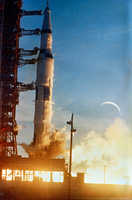
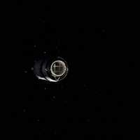

12/21/1968SearchLaunch of Apollo 8 lunar orbit mission: The Apollo 8 (Spacecraft 103/Saturn 503) space vehicle is launched from Pad A, Launch Complex 39, Kennedy Space Center, at 7:51 a.m. (EST), December 21, 1968. The crew of the Apollo 8 lunar orbit mission was astronauts Frank Borman, commander; James A. Lovell Jr., command module pilot; and William A. Anders, lunar module pilot. Apollo 8 was the first crewed Saturn V launch and the first human mission to lunar orbit. (NASA on The Commons)Apollo 8 Third Stage: This is a photograph taken from the Apollo 8 spacecraft looking back at the Saturn V third (S-IVB) stage from which the spacecraft had just separated following trans-lunar injection. Attached to the S-IVB is the Lunar Module Test Article (LTA) which simulated the mass of a Lunar Module (LM) on the Apollo 8 lunar orbit mission. The 29-feet panels of the Spacecraft LM Adapter which enclosed the LTA during launch have already been jettisoned and are out of view. Sunlight reflected from small particles shows the "firefly" phenomenon which was reported by astronaut John H. Glenn Jr. during the first Earth-orbital flight, Mercury-Atlas 6 (MA-6) of the Mercury Program.